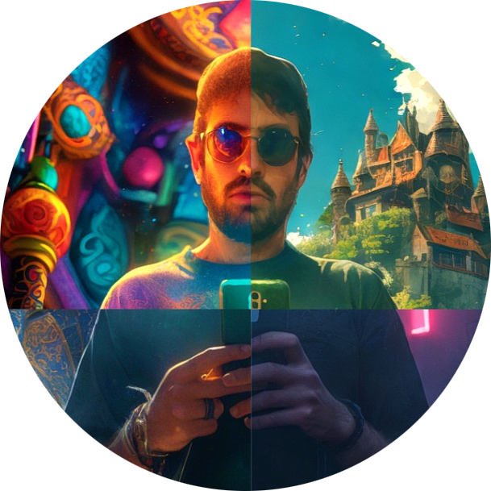

Scientist, AI Leader, and Builder — I work at the intersection of deep learning, 3D vision, and biomedical AI. Currently shaping research at TUM and startups in healthtech at AngioWave Imaging and venture capital at Nazca.
My research lies at the intersection of computer vision, inverse problems, and machine learning. I am particularly interested in 3D shape reconstruction, biomedical imaging, inverse rendering, and applied harmonic analysis.
Before TUM, I was a Postdoctoral Researcher at LMU Munich’s Mathematical Foundations of AI Group with Prof. Gitta Kutyniok, focusing on inverse problems in graphics and medical imaging.
I completed my PhD at TU Berlin in the Applied Functional Analysis Group, working on deep learning and microlocal analysis for tomographic reconstructions.
I was also part of the Berlin Mathematical School, Phase II scholarship holder.
Below are some of my recent talks at JuliaCon and PyData: